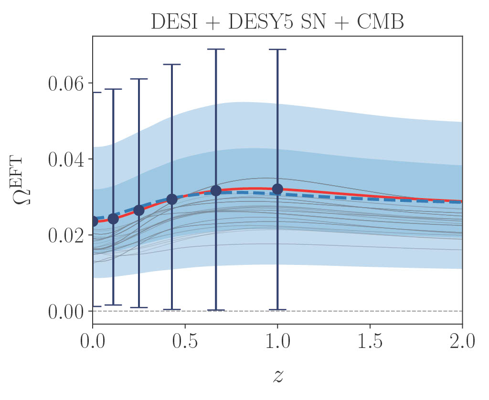
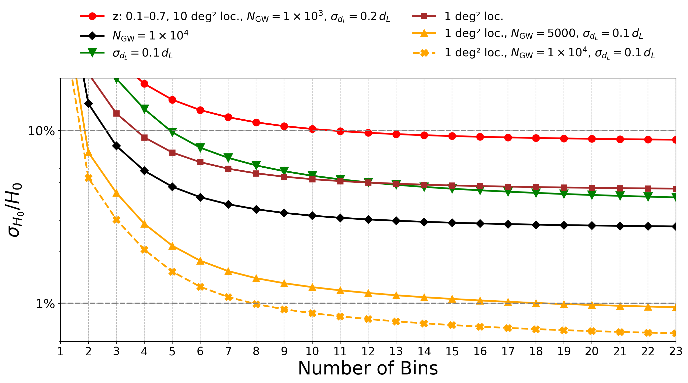
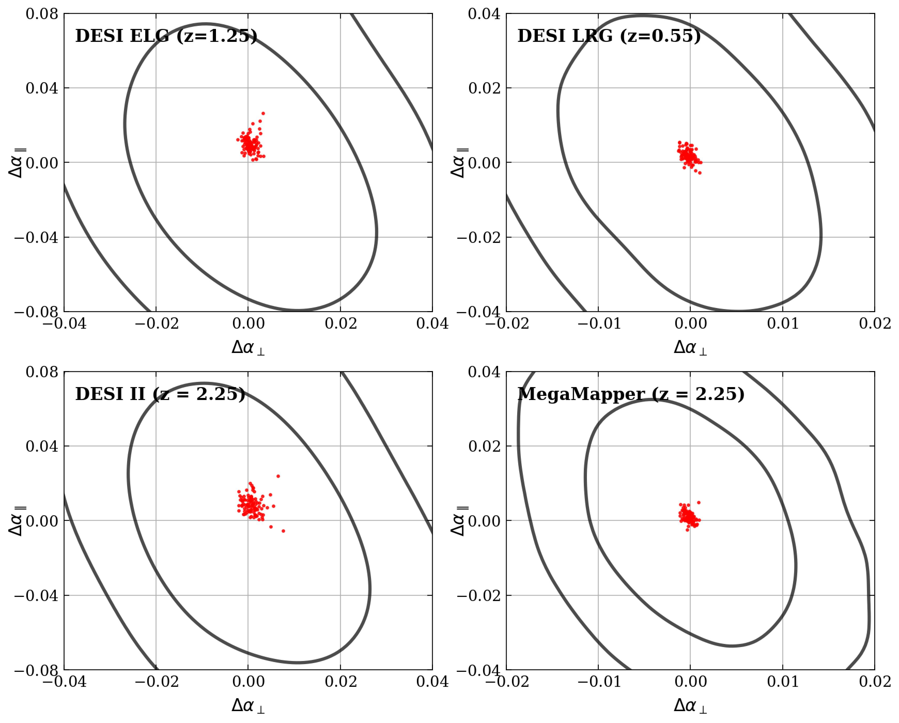

About Me
I'm a PhD candidate in the
Physics Department at the
University of Michigan, working in theoretical
cosmology under Prof. Dragan Huterer and Prof. Camille Avestruz. My research
focuses on dark energy, modified gravity, and large-scale structure, combining
statistical methods and observational data to test extensions of standard cosmology.
Alongside my PhD work, I am also deeply interested in machine learning, optimization, and efficient AI systems. I have worked on related problems in LLM quantization and numerical optimization, including collaboration with PolyLabs Inc. on solver design and model efficiency. I am especially drawn to problems where mathematical structure leads to practical algorithmic and systems improvements.
Skills
Programming
Python · C/C++ · SQL · Bash · Fortran · CUDA (via PyTorch)
ML & Data
PyTorch · PyTorch Geometric · scikit-learn · NumPy · SciPy · pandas · Matplotlib
Methods
Machine learning · Graph neural networks (GNN) ·
Statistical modeling · Numerical optimization ·
Bayesian inference · MCMC ·
Uncertainty quantification · Hypothesis testing ·
Experiment design
Systems & Infrastructure
Linux · Git · Slurm · HPC · Parallel computing · GPU workflows (CUDA / Apple MPS)
Communication
Delivered technical talks in 1,000+ member international collaborations.
Designed and taught a university-level summer course translating complex quantitative
concepts for non-specialist audiences.
Projects
LLM Quantization & Optimization Solver
PolyLabs Inc. · Mar 2026 – Present
Built evaluation pipelines for LLM compression and developed batched PyTorch
solvers for binary least-squares problems — including both exact (sphere decoding)
and heuristic (ICM) methods. Ran systematic experiments across N = 1K to 1M
instances on CPU, CUDA, and Apple MPS, analyzing convergence, stability, and
quality–runtime tradeoffs. Found that restart budget dominates over sweep count
for harder matrices, enabling more efficient parallelism. Results contributed
to a 14× speedup over the baseline in their production pipeline.
Stack: Python · PyTorch · CUDA · Apple MPS · NumPy
Graph Neural Networks for 3D Simulation Data
Built PyTorch Geometric pipelines for graph-based learning on 3D simulation
data, including full data preprocessing, model training, and evaluation under
noise and distribution shift. Implemented and compared GAT, GCN, and GIN
architectures, evaluating predictive performance and robustness across
different graph representations and perturbation settings.
Stack: Python · PyTorch · PyTorch Geometric
Bayesian Inference & Forecasting Pipeline
Built scalable Python pipelines for large-scale data processing, Bayesian
inference, and high-dimensional statistical modeling on observational datasets
in an HPC environment. Designed and executed end-to-end analysis workflows for
weak-signal detection in noisy data, including baseline comparison, robustness
checks, ablation-style validation, and systematic bias quantification. Also
developed a tomographic cross-correlation forecasting pipeline — quantifying
performance sensitivity to event count, distance error, and localization
accuracy in a high-dimensional inference setting.
Stack: Python · NumPy · SciPy · Slurm · HPC
Academic Research
My academic work is in theoretical and observational cosmology, with a focus on
dark energy, modified gravity, and large-scale structure. I am a member of the
DESI collaboration.
Full publication list:
InspireHEP
·
Google Scholar.
5,000+ citations · h-index 16 · 21 papers (18 published)
Modified Gravity Constraints with DESI
Derived constraints on Horndeski and non-minimally coupled gravity models using
DESI DR2 and Y1 data. Helped build and run the EFT of Dark Energy analysis
pipeline, explored scale dependence in full-shape clustering, and contributed
to cosmological parameter estimation.

J. Pan and G. Ye, Non-minimally Coupled Gravity Constraints from DESI DR2 Data (2025),
arXiv:2503.19898.
M. Ishak, Pan, J.*, R. Calderon et al., Modified gravity constraints from full shape modeling of clustering measurements from DESI 2024,
J. Cosmology Astropart. Phys. 09 (2025) 053,
arXiv:2411.12026.
Hubble Constant from Galaxy–GW Cross-Correlations
Developed a tomographic cross-correlation pipeline using galaxy surveys and
gravitational-wave events to constrain H₀ without host-galaxy identification.
Performed Fisher forecasts and quantified uncertainty scaling with event count
and localization errors.

J. Pan, D. Huterer, C. Avestruz et al., Determining the Hubble Constant through Cross-Correlation of Galaxies and Gravitational Waves (2025),
arXiv:2510.19931, under revision in Phys. Rev. D.
Initial Conditions for Horndeski Gravity
Derived consistent adiabatic initial conditions for Horndeski gravity within
the EFT framework and implemented them in cosmological Boltzmann codes,
resolving long-standing inconsistencies in early-time evolution.
J. Pan, M.-X. Lin, G. Ye, M. Raveri and A. Silvestri,
Consistent Initial Conditions for Early Modified Gravity in Effective Field Theory,
Phys. Rev. D 112 (2025) 083551,
arXiv:2506.17411.
BAO Analysis in Modified-Gravity Models
Studied the robustness of the standard BAO analysis in Horndeski models,
finding negligible bias in BAO compression when applied to modified-gravity data.

J. Pan, D. Huterer, F. Andrade-Oliveira and C. Avestruz,
Compressed baryon acoustic oscillation analysis is robust to modified-gravity models,
J. Cosmology Astropart. Phys. (2024) 051
[2312.05177].
Contact
I'm actively looking for industry opportunities in ML engineering, AI research,
and quantitative modeling. Feel free to reach out — the best way is email.
jiamingp@umich.edu
·
+1-732-763-3679